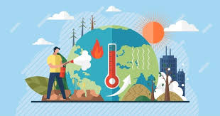

Causas del aumento de las emisiones
1.La combustión de carbón, petróleo y gas produce dióxido de carbono y óxido nitroso.
2.La tala de bosques (deforestación). los árboles absorben CO2 de la atmósfera y de ese modo ayudan a regular el clima. Cuando se talan, ese efecto beneficioso se pierde y el carbono almacenado en los árboles se libera en la atmósfera agravando el efecto invernadero.
El desarrollo de la ganadería.
3.Las vacas y las ovejas producen una gran cantidad de metano durante la digestión.
4.Los fertilizantes que contienen nitrógeno producen emisiones de óxido nitroso.
5.Los gases fluorados emitidos por los aparatos y productos que utilizan estos gases. Estas emisiones tienen un potente efecto de calentamiento, hasta 23 000 veces superior al producido por el CO2.
